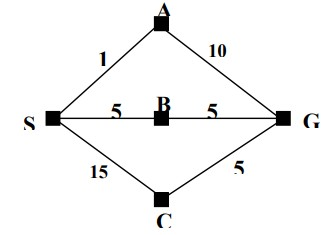

知识点概括 / Knowledge overview
先理解 AI 的“思考/行动”和“像人/理性”两个维度；再把问题写成 state、action、transition、goal 和 cost；最后学习搜索队列如何决定下一个节点，以及专家系统怎样用规则得到结论。
Define AI from two dimensions, formalize a problem as states and actions, then compare search strategies and rule based inference.
学习路径 / Learning path
act/think · human/rational
state · action · goal · cost
BFS · UCS · DFS family
g · h · f · A*
facts · rules · inference
kfb · krb · driver
| 课件 | 学习范围 | 核心问题 |
|---|---|---|
Week_3_1_Intro to AI.md | AI 定义、问题形式化、uninformed/informed search。 | “系统怎样选择下一个 state？” |
Week_3_2_Expert_System.md | 专家系统架构、forward/backward chaining、PyKE。 | “系统怎样用 facts 和 rules 得到结论？” |
| 本页补充 | 搜索代码翻译、图片读法和统一比较表。 | 把图、伪代码和英文简答连接起来。 |
1. AI 是什么 / What is AI?
课件把 intelligence 联系到学习、理解、保留知识、快速响应、推理和解决问题。AI 可以被理解为用机器模拟人类智能，包含 reasoning、knowledge、planning、learning、communication、perception 和 action。
| View | Meaning | Sentence |
|---|---|---|
| Thinking humanly | 模拟人类思考过程 | “The system focuses on human like reasoning.” |
| Thinking rationally | 按照逻辑/理性推理 | “The system focuses on correct reasoning.” |
| Acting humanly | 行为像人 | “The system behaves like a human.” |
| Acting rationally | 选择合理行动 | “The system chooses actions that achieve a goal.” |
AI 的基础来自 philosophy、mathematics、psychology、linguistics 和 computer engineering。Symbolic AI 明确表示和操作知识；sub symbolic AI 更关注输入到输出的正确响应。
2. AI 定义、基础与应用补充
Intelligence
课件把 intelligence 拆成 learning from experience、acquiring and retaining knowledge、responding to new situations、using reason to solve problems。AI 是机器对这些能力的 simulation。
Symbolic vs sub-symbolic
Symbolic AI 用可解释 symbols 和 rules 显式表示现实世界知识；sub-symbolic AI（如 neural networks）重视从输入得到正确响应，不要求内部单元逐一对应现实概念。
Foundations
AI 借鉴 philosophy、mathematics、psychology、linguistics 和 computer engineering：分别提供逻辑与心智观点、证明与算法、认知模型、语言结构和计算硬件。
Applications
NLP、machine translation、reading comprehension、planning and robotics、machine learning、game playing、medical diagnosis、recommendation、vision 与 autonomous systems。
3. AI 应用与限制 / Applications and limits
Language
NLP、机器翻译、reading comprehension、speech recognition。
Action
autonomous driving、planning、robotics、game playing。
Learning
machine learning、image generation、poverty prediction、data center energy saving。
Risks in the lecture
open domain dialogue failures、adversarial examples、bias、privacy。
High impact, diversity, and complexity make AI tasks difficult. A system may perform well on a benchmark and still fail in an unfamiliar context.
4. 把问题形式化 / Formalize a search problem
起点
可用动作
动作后的状态
是否到达目标
路径代价
State space 是所有可能状态的集合；path 是状态和动作组成的序列；solution 是从初始状态到目标状态的路径；optimal solution 的 path cost 最小。
5. Uninformed search / Informed search
Uninformed search 没有从当前节点到目标的额外信息，只能判断是否为目标；informed search 使用 goal information 或 heuristic。
| Strategy | Rule | Strength / limitation |
|---|---|---|
| BFS | 先扩展浅层，depth d 后再 depth d+1。 | 能找到 shallow solution；内存可能很大。 |
| Uniform-cost | 扩展 path cost g(n) 最低的节点。 | 关心代价，不关心步数。 |
| DFS | 沿最深的未扩展路径继续。 | 内存少；可能走错或陷入无限深度。 |
| Depth-limited | DFS 加最大深度 l。 | 内存效率好；限制不当会漏解。 |
| Iterative deepening | 逐渐增加深度限制重复搜索。 | 结合 BFS 的浅解性质和 DFS 的内存优势；会重复工作。 |
| Bidirectional | 从起点和目标同时搜索，直到相遇。 | 需要知道目标状态，可能大幅减少搜索。 |
6. 搜索算法全表 / Complete search family

BFS levels
BFS 使用 FIFO queue，按 depth level 扩展，因此先找到 shallowest solution。

四个评价维度
比较任何搜索算法时都回答：complete 吗、optimal 吗、time 需要生成多少 nodes、space 最多保存多少 nodes。

Cost 与 heuristic
UCS 只看已付代价 g(n)；greedy 只看估计 h(n)；A* 看 f(n)=g(n)+h(n)。
| Algorithm | Select next by | Complete / optimal | Main risk |
|---|---|---|---|
| BFS | 最浅 depth；FIFO queue | 有限 branching 下 complete；unit/equal step cost 时 optimal | frontier 很大，memory expensive |
| Uniform-cost | 最小累计 g(n) | 正 step cost 下 complete and optimal | 可扩展大量低代价节点 |
| DFS | 最深节点；LIFO stack | 无限/有环空间不保证 complete；not optimal | 走入很深的错误分支 |
| Depth-limited | DFS + depth limit l | 目标深于 limit 时 incomplete；not generally optimal | limit 太小漏解，太大接近 DFS |
| Iterative deepening | 依次运行 limits 0,1,2... | 有限 branching 下 complete；unit cost 时 optimal | 重复生成上层节点，但 memory 小 |
| Bidirectional | 从 start 和 known goal 同时搜索 | 取决于两侧算法与 meeting test | 需要明确 goal、可逆 predecessor 和交会检测 |
| Greedy best-first | 最小 h(n) | not generally optimal；可能被坏 heuristic 误导 | 忽略已经付出的 path cost |
| A* | 最小 g(n)+h(n) | 在合适的 admissible/consistent heuristic 条件下 complete and optimal | frontier 仍可能占大量 memory |
7. Greedy 与 A* / Heuristic search
Heuristic h(n) 是从节点 n 到目标的估计代价。Greedy 只最小化 h(n)；A* 合并当前代价和未来估计。
g(n)：从 start 到 n 的已走路径代价。h(n)：从 n 到 goal 的估计代价。f(n)：经过 n 的完整解的估计代价。
8 puzzle 中，错位方块数是一个 heuristic；方块到目标位置的 Manhattan distance 通常提供更细的估计。课件用 monotonicity 讨论父子节点的 f 值；考试若给出数值，按公式逐个计算。
8. 专家系统结构 / Expert system components
Knowledge base
保存 domain facts 和 IF–THEN rules。Rule 的 if 部分是 condition，then 部分是 conclusion/action。
Inference engine
根据用户回答和规则组织推理，向前推导或向后证明目标。
User interface
向用户提问、收集答案、展示 diagnosis 或 action。
知识工程包括 knowledge acquisition、建立知识库、prototype、专家反馈和反复 refinement。专家知识有 factual knowledge 和 heuristic knowledge。
Forward chaining
从已知 facts 出发，匹配规则并 assert 新 facts，直到得到结论。Data driven.
Backward chaining
从 goal 出发，找能得到 goal 的规则，再逐个证明 if 部分的 subgoals。Goal driven.
9. 专家系统架构、人员与知识

Architecture
User 通过 interface 输入问题；inference engine 使用 knowledge base 中的 facts/rules 推理；explanation facility 说明为什么问、怎样得到结论。

Rule chain
规则可把多个 facts 用 AND/OR 组合成中间 decision，再继续触发后续规则。必须区分“规则已匹配”和“结论已证明”。
| Element / role | Responsibility |
|---|---|
| Domain expert | 提供特定领域的专业知识、案例和判断。 |
| Knowledge engineer | 获取、结构化并验证专家知识，建立和精炼 knowledge base。 |
| Knowledge base | 保存 facts、rules、heuristics 和领域关系。 |
| Inference engine | 匹配规则、控制推理次序并生成结论。 |
| User interface | 收集用户输入并展示建议。 |
| Explanation facility | 解释系统为何提问、用了哪些规则及怎样得出结论。 |
Forward chaining
Data-driven：从已知 facts 出发，触发 IF 条件匹配的规则，不断产生新 facts，直到得到结论或没有新规则可用。
Backward chaining
Goal-driven：从要证明的 goal 出发，寻找 THEN 部分匹配的规则，再递归证明 IF 部分的 subgoals。
Shallow ES 使用 surface knowledge、heuristic rules 和规则推理，不能解释深层因果；deep ES 表示结构、行为与因果知识，并可结合 rule-based 与 model-based reasoning。MYCIN 使用带 certainty factors 的 IF–THEN rules 诊断感染，说明专家系统也可以处理不确定性。
10. PyKE：事实、规则和模式 / PyKE
| File / term | Meaning |
|---|---|
.kfb | knowledge fact base，事实。 |
.krb | knowledge rule base，规则。 |
.kqb | knowledge question base，问题、验证答案和反馈文字。 |
| literal pattern | 只匹配固定值。 |
$variable | 可绑定值的 pattern variable。 |
$_variable | anonymous variable，不关心绑定值。 |
| backtracking | 某个 premise 失败后回到上一步，尝试其他匹配。 |
from pyke import knowledge_engine
from pyke import goal
engine = knowledge_engine.engine(__file__)
engine.activate('rule_base_file')
my_goal = goal.compile('goal_name(...)')A forward rule matches known facts and asserts new facts. A backward rule matches a goal and proves its subgoals.
11. PyKE 文件与推理流程
| File/base | Purpose | Remember |
|---|---|---|
.kfb fact base | 存储已知 facts；可分 universal facts 与每次运行重置的 case-specific facts。 | Facts are inputs to reasoning. |
.krb rule base | 可同时包含 forward 与 backward chaining rules。 | IF part = premises; THEN part = assertion/goal. |
| question base | 定义向 end user 提问的内容、允许答案和返回值。 | Ask only when knowledge is not already available. |
knowledge_engine | 建立 engine，载入知识库。 | Reset between independent cases when required. |
engine.activate(...) | 激活规则库，运行 forward rules。 | Activation may assert additional facts. |
goal.compile(...) | 建立 backward-chaining query。 | The engine tries rules and backtracks across alternatives. |
facts + rules
patterns and variables
assert facts / prove goals
try alternatives
show reasoning
12. 搜索与规则代码：用途和输出 / Code patterns
Week 3 的正式重点是算法与推理过程。下面代码把课件中的 queue、state expansion 和 IF-THEN rule 转成容易跟踪的 Python；它用于理解课件概念，不代表新增的官方库考点。
BFS：queue 的实际写法
from collections import deque
graph = {
"S": ["A", "B"],
"A": ["G"],
"B": ["C"],
"C": [],
"G": []
}
queue = deque(["S"])
visited = []
while queue:
node = queue.popleft()
if node in visited:
continue
visited.append(node)
queue.extend(graph[node])
print(visited)['S', 'A', 'B', 'G', 'C']popleft() 从队首取节点，extend 把 children 加到队尾，因此 BFS 按层展开。若题目要求找 goal，应在取出或生成节点时按题目规定检查目标。
IF-THEN rule 的 Python 类比
facts = {
"raining": True,
"has_umbrella": False
}
if facts["raining"] and not facts["has_umbrella"]:
conclusion = "take_umbrella"
print(conclusion)take_umbrellaDictionary 保存 facts；if 是 antecedent/condition；赋值得到 consequent。Forward chaining 从已知 facts 推出新 fact，backward chaining 从 goal 反查需要证明的 subgoals。
PyKE driver：每一行做什么
from pyke import knowledge_engine
engine = knowledge_engine.engine(__file__)
engine.activate("fc_example")| Line | Meaning | Output |
|---|---|---|
from pyke import knowledge_engine | 导入 PyKE 的 inference engine。 | 成功时通常不打印内容；失败会出现 import error。 |
knowledge_engine.engine(__file__) | 以当前 driver 文件位置寻找/加载相关 knowledge bases。 | 返回 engine object，保存在变量 engine。 |
engine.activate("fc_example") | 激活指定 rule base，使 forward rules 可以根据 facts 触发。 | 推导结果取决于对应 .kfb facts 与 .krb rules，没有脱离文件的固定输出。 |
13. 搜索与专家系统剩余正式考点
复杂度符号与 heuristic 质量
| Symbol / property | Meaning |
|---|---|
b | Branching factor：每个 node 平均/最多产生的 successors。 |
d | Shallowest goal 的 depth。 |
m | State space 的 maximum depth，可能无限。 |
l | Depth-limited search 的 limit。 |
| BFS | 典型 time 与 space 都是 O(b^d)，因此 memory 是主要问题。 |
| DFS | 典型 time O(b^m)，space O(bm)；memory 小但可能陷入深分支。 |
| Iterative deepening | 典型 time O(b^d)、space O(bd)，结合 BFS 的浅层保证与 DFS 的低内存。 |
| Bidirectional | 理想情况下两侧各搜索约一半深度，规模约 O(b^(d/2))。 |
- Admissible heuristic：
h(n)从不高估到 goal 的真实最小成本。 - Consistent/monotone heuristic：
h(n) ≤ c(n,n') + h(n')，沿路径的 A*f值不会下降。 - Dominance：若两个 heuristic 都 admissible，且
h2(n) ≥ h1(n)，则 h2 通常信息更多、扩展节点更少。 - 8-puzzle 的 misplaced tiles 和 Manhattan distance 都可作 heuristic；Manhattan 通常 dominates misplaced tiles。
Expert-system building and trade-offs
访谈 domain experts
facts + rules
cases and consistency
correct and update KB
Advantages
保存和复制 expertise；稳定一致；可随时使用；在狭窄领域快速给出建议；可提供 reasoning explanation。
Limitations
缺少人类 common sense、creativity 和广泛情境理解；knowledge/rule 错误会传播；环境变化需要更新；知识获取耗时且昂贵。
PyKE pattern matching：$son 是可绑定变量；以下划线开头的变量如 $_father 常用于不关心其值的匹配；nested tuples 也可参与匹配。Backtracking 会在后续 premise 失败时回到之前条件寻找另一个可行绑定。
14. 课件案例映射 / Lecture case map
| Case | Concept demonstrated |
|---|---|
| Machine translation / reading comprehension / speech recognition | NLP 的输出不仅要识别 symbols，还要理解 context 与 meaning；speech-to-text 不等于 language understanding。 |
| Autonomous driving | Perception、sensor fusion、localisation、planning 和 control 的组合。 |
| Deep Blue / Watson / AlphaGo | Game/search、question answering、deep learning/reinforcement learning 的不同历史案例。 |
| Adversarial image / bias / privacy | 高 accuracy 不等于在扰动、公平性和个人隐私方面可靠。 |
| MYCIN | Medical diagnosis、IF–THEN rules、certainty factors。 |
| NHS/DXplain | 症状输入、differential diagnosis 和进一步信息建议。 |
| Banking/insurance | Loan、credit、risk、fraud decisions。 |
| Production scheduling / botanical keys | 规则知识用于 manufacturing schedule 与 plant identification。 |
| PyKE family/weather examples | Family relations 演示 pattern variables/backtracking；weather system 演示 question base 与 backward chaining。 |
John McCarthy 是 AI 学科奠基者之一，并创造了 “Artificial Intelligence” 一词。这类历史与案例更适合 MCQ/True-False；算法步骤更适合短题。
15. Week 3 图片题考点 / Visual-question checklist
| 课件图 | 读图步骤 | 可能要求 |
|---|---|---|
| State-space / 8-puzzle | 找 initial state、actions、transition、goal test、step cost。 | 把图片形式化为 search problem；判断一次 move 后的新 state。 |
| BFS / DFS tree | 确认 child 的左右/字母顺序，再写 frontier 和 expansion order。 | 给出访问顺序、目标深度、time/space 特征。 |
| Weighted graph | 在每个 node 标出 g(n)、h(n)、f(n)。 | 分别模拟 UCS、greedy、A* 下一步扩展哪个 node。 |
| Search comparison table | 逐列看 completeness、optimality、time、space；同时确认 step-cost 假设。 | 不要无条件写“BFS optimal”；应注明 equal/unit step cost。 |
| Expert-system architecture | 沿 user interface → inference engine ↔ knowledge base → explanation facility 读箭头。 | 给组件命名并解释数据/知识如何流动。 |
| Rule chain / family tree | 把图中关系翻译为 facts，按 AND/OR 判断哪些 antecedents 已满足。 | 完成 forward chaining，或从 goal 展开 backward subgoals。 |
| PyKE 截图 | 区分 .kfb facts、.krb rules、driver Python；识别变量与 pattern match。 | 判断哪条 rule 会 fire、产生什么新 fact、何时 backtrack。 |
16. 可能的考试问法 / Possible exam prompts
- 把 AI 定义归入 thinking/acting 与 humanly/rationally 四象限。
- 判断 symbolic 与 sub-symbolic AI 的描述。
- 判断搜索算法使用 queue、stack、path cost 还是 heuristic。
- 根据条件判断 algorithm 是否 complete/optimal。
- 区分 knowledge base、inference engine、interface 和 explanation facility。
- 区分 forward/backward chaining 与 shallow/deep expert system。
- 写出 search problem 的 initial state、actions、transition、goal test、step cost。
- 在小图上给出 BFS/DFS/UCS/greedy/A* 的下一节点或展开顺序。
- 解释
g(n)、h(n)、f(n)和 admissibility。 - 根据 facts 和 IF–THEN rules 推导 forward chain，或从 goal 反推 subgoals。
- 说明 PyKE 的 fact/rule/question bases 和 backtracking。
17. 英文与自检 / English and check
“BFS expands nodes level by level, whereas DFS follows one deep path first.”
“Forward chaining starts with facts and derives conclusions; backward chaining starts with a goal and proves its premises.”
“A* selects a node by minimizing the estimated total cost, f(n)=g(n)+h(n).”
- 我能写出五个 search problem components。
- 我能比较 BFS、DFS、uniform-cost 和 A*。
- 我能解释 completeness、optimality、time 和 space。
- 我能画 forward/backward chaining 的方向。
- 我能解释 PyKE 的 fact/rule/question base。
0 / 0 completed